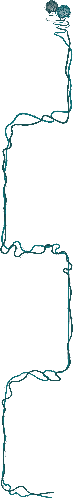
A Portrait
I build immersive digital ecosystems, not just websites. With my background in Cognitive Psychology, I engeneer every layer to align user psychology with business logic. I treat design trends as data, not dogma. Instead of a generic minimalism, I create tailored experiences that portray a specific story.
I own the entire process, from deep discovery to technical handoff; treating documentation and cross-team communication as non-negotiable. AI and accessibility aren't compliance checkboxes: they're strategic assets for usability.
Instead of raw talent I rely on relentless execution and don't believe in arbitrary limits. I constantly challenge myself: there is always a better way to design.

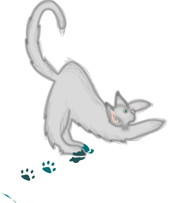
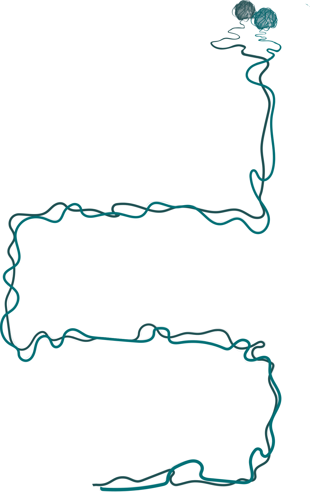
Behind the Pixels
My design thinking doesn't stop at the screen; it's fueled by a lifelong obsession with tangible creation.
Whether I'm sculpting custom action figures, experimenting with oil painting, or prototyping physical objects, I am driven by a compulsive need to experiment.
This "maker" mindset is what allows me to bring a unique tactile sensibility to digital products. I don't just design interfaces; I build worlds.
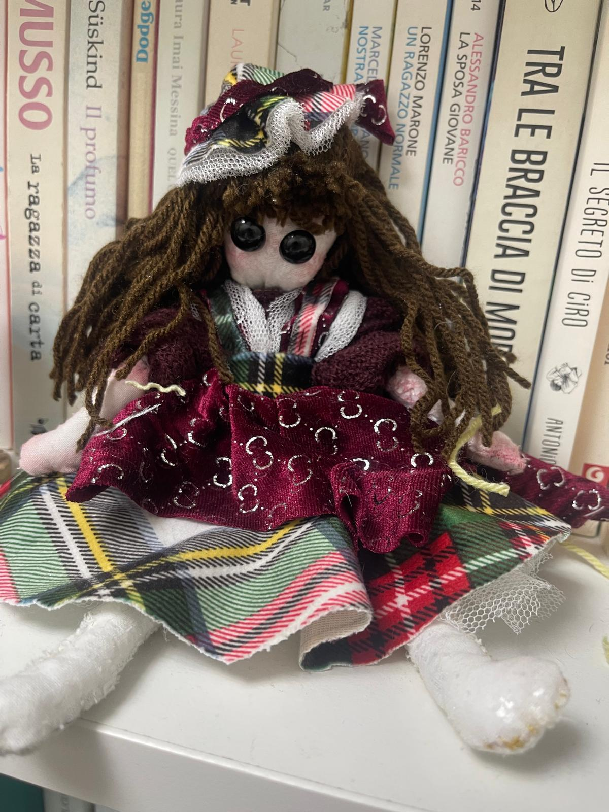
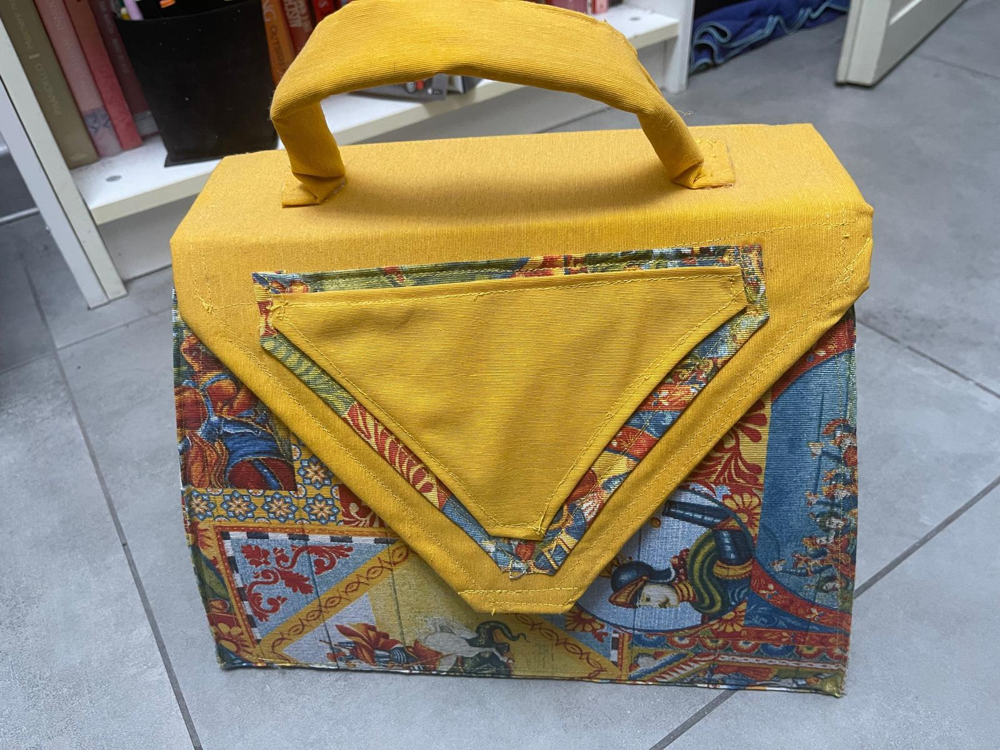
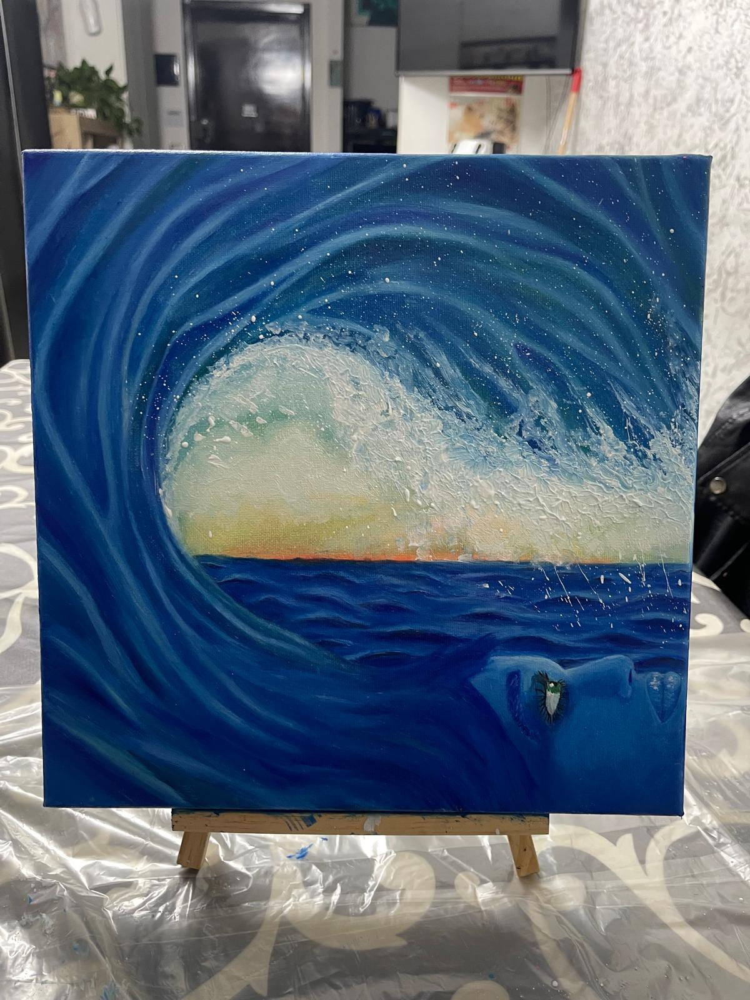
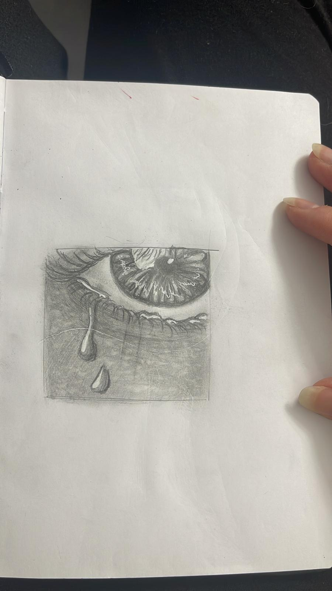
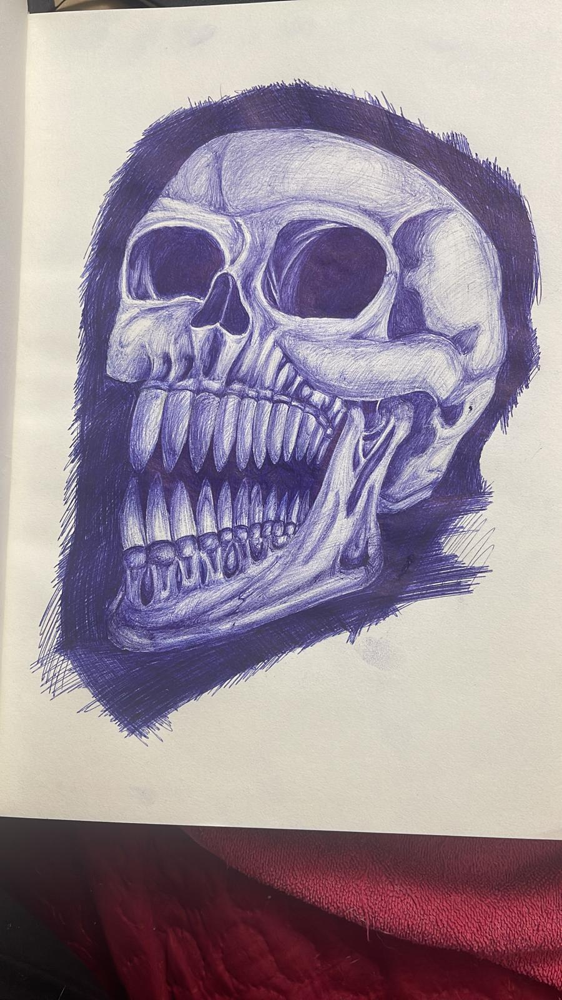
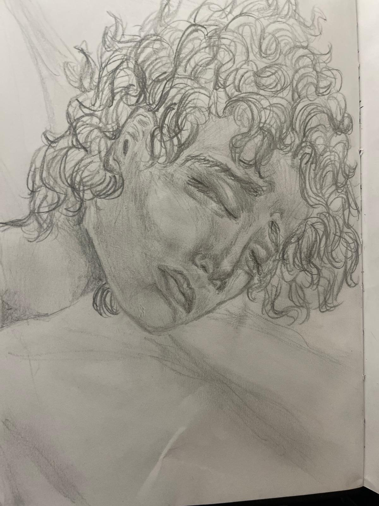
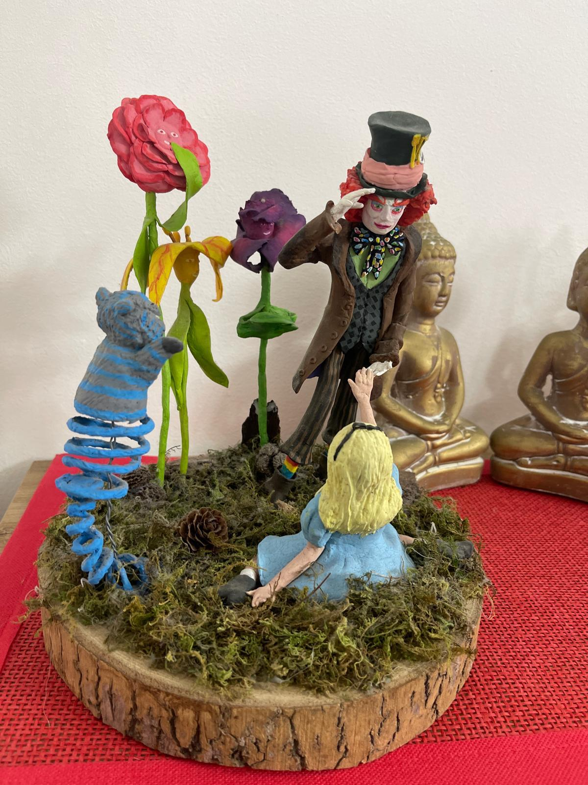
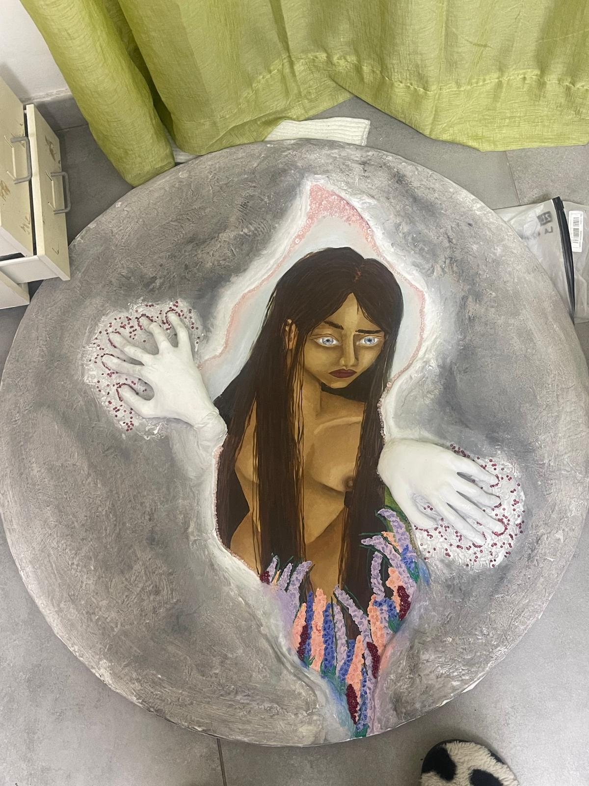
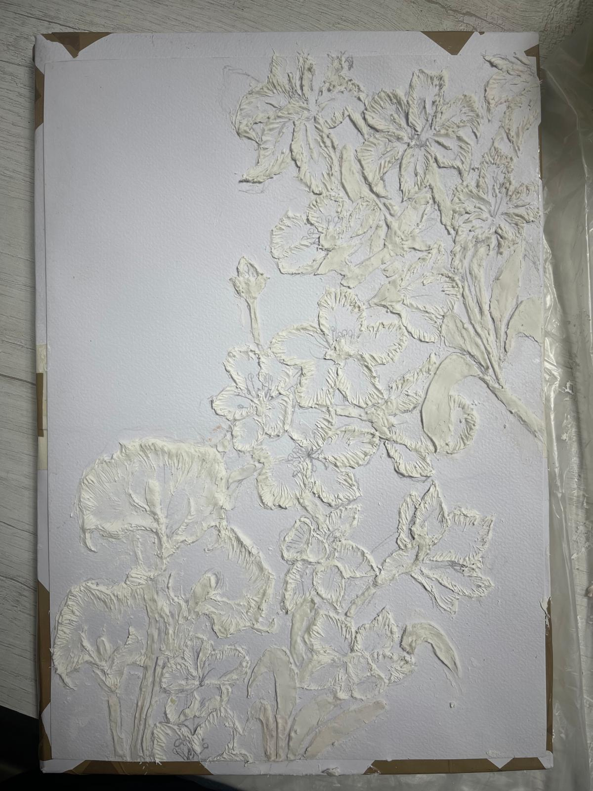
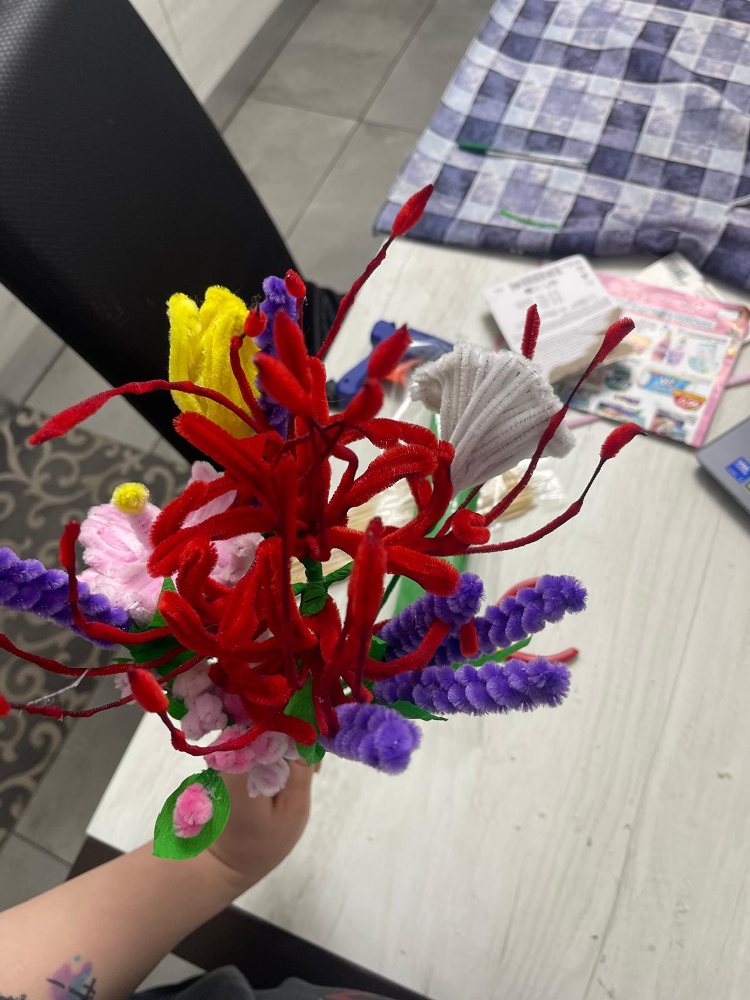
Side Quests
My mind never hits "pause." To channel this creative energy outside of client work, I'm building a video game: a side project bridging sociological research with sensory storytelling.
I'm obsessed with creating atmospheres where every shift in saturation or visual distortion is a deliberate psychological tool.
But here is where my maniacal organization kicks in: what started as an inside joke is now a structured product with a strict roadmap of two-week milestones.
Fun facts about me
-
Research is my happy place.
There's a unique thrill in watching messy data transform into clear, strategic decisions.
-
Structure over scribbles.
My handwriting is a disaster. That's probably why I'm so obsessed with designing structured, digital-first systems.
-
Flow state: Activated.
When the headphones are on, it means fewer distractions and much sharper design decisions.